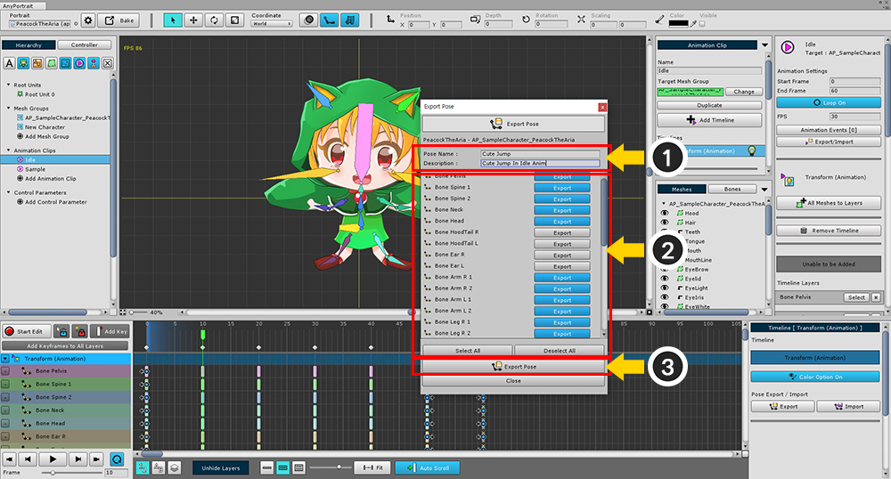
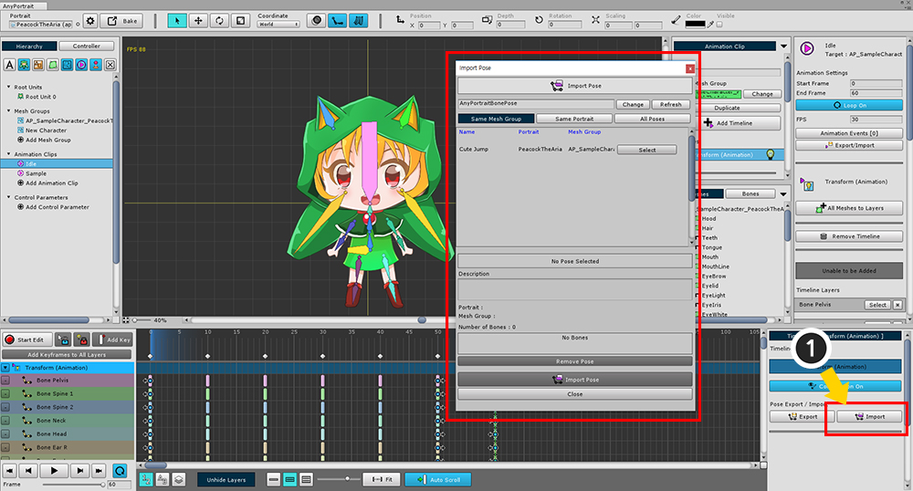
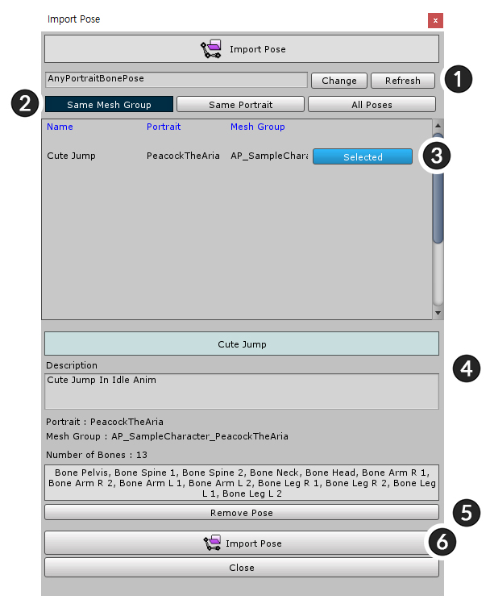

AnyPortrait > マニュアル > 骨のポーズをコピー/貼り付け
骨のポーズをコピー/貼り付け
1.0.4
多くの場合、骨アニメーションを作成するときに、複数回の骨ポーズを繰り返し作成する必要があります。
同じ「Stand」で、さまざまなモーションアニメーションを作成することができ、毎回同じ動作を取ることができます。
このページでは、1つのフレームの骨の姿勢をコピーして、別のフレームに貼り付ける方法を説明します。
ポーズをコピー

(1) 骨が含まれているタイムラインを選択して、
(2) 時間スライダをコピーする場所に移動し、
(3) プロパティのUIで「Export」ボタンをクリックします。

(1) ポーズの名前と説明を入力します。
(2) コピーする骨を選択します。「Select All / Deselect All」ボタンを押して一度に選択することができます。
(3) 「Export Pose」ボタンを押すと、ファイルに保存されます。
ファイルは自動的に作成されるので、簡単にコピーすることができます。
ポーズ貼り付け

同じ方法で、骨が選択されたタイムラインの「Import 」ボタンを押します。

先ほど保存したポーズがリストに表示されます。
(1) コピーする対象となるポーズを選択して、
(2) 保存されたポーズの名前、説明と含まれている骨を確認した後、
(3) 「Import Pose」ボタンをクリックして、タイムラインに貼り付けます。

保存された骨のポーズは、選択的に貼り付けることができます。
(キーフレームがない場合は、キーフレームが自動的に作成されます。)
ポーズインポートダイアログ

ポーズを保存するダイアログとは異なり、ダイアログは少し複雑です。
1. Save path
エディターに保存されたパスを保存します。
2. Filter
「同じメッシュグループ (Same Mesh Group)」、「同一のポートレート (Same Portrait)」、または「すべてのポーズ (All Poses)」としてフィルタリングされます。
3. Pose item
保存されたポーズ。 「Select」ボタンを押して選択します。
4. Selected pose information
ポーズ名、説明、および保存された骨の名前が表示されます。
5. Remove Pose
6. Import Pose
アニメーションのキーフレームを作成し、ポーズを貼り付けます。
ポーズを対称された骨に貼り付け

鏡の骨(Mirror Bone)がある場合は対称的にポーズをコピーすることができます。
骨のミラー(Mirror Copy)については、「関連ページ」を参照してください。

ポーズをコピーするプロセスは同じです。
(1) 「Export」ボタンを押して、(2) ポーズを保存するためにコピーする骨を選択します。

(1) 「Import」ボタンをクリックして、インポートダイアログボックスを開きます。
(2) 保存したポーズを選択して、
(3) ポーズを対称された骨にコピーするには、「Import Symmetrically」ボタンを押してください。
ミラーコピーされた骨がなければ、ポーズが選択された骨にコピーされます。

ポーズが対称された骨にコピーされたことがわかります。